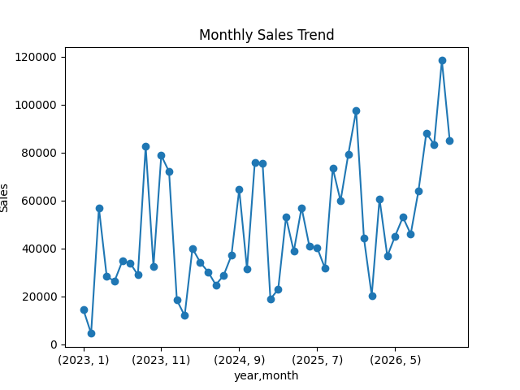
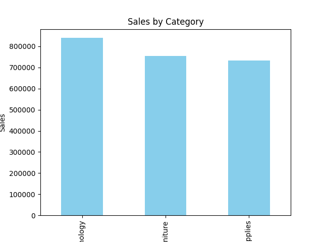
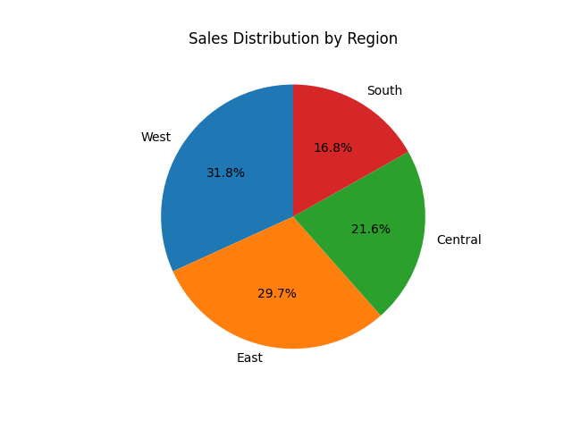
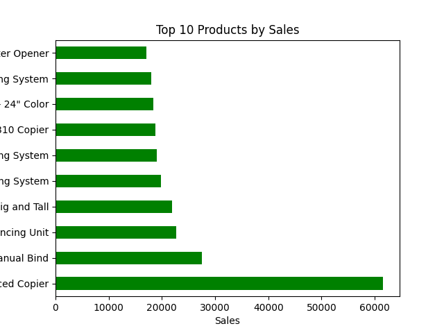
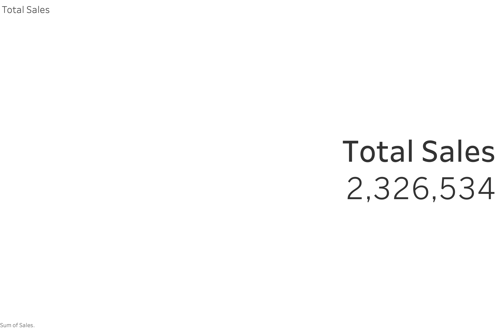
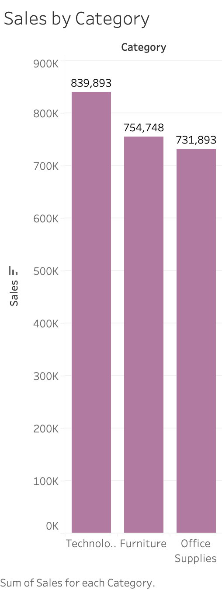
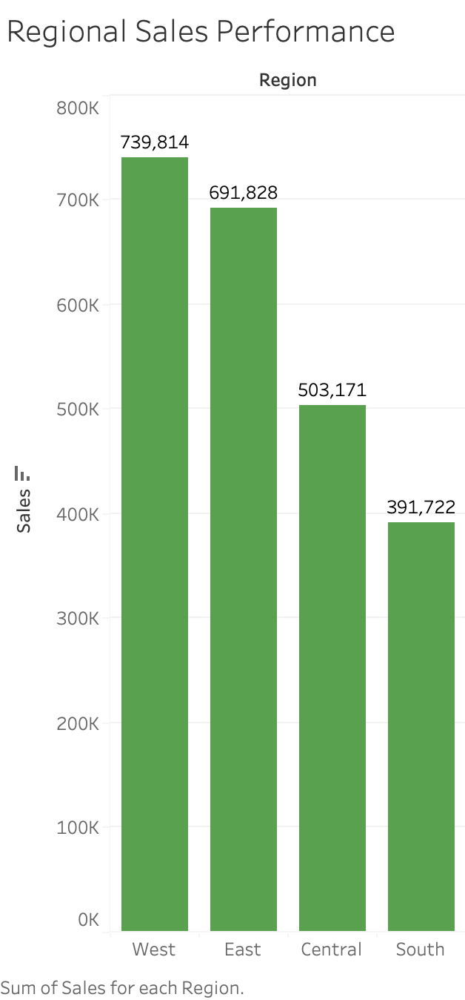
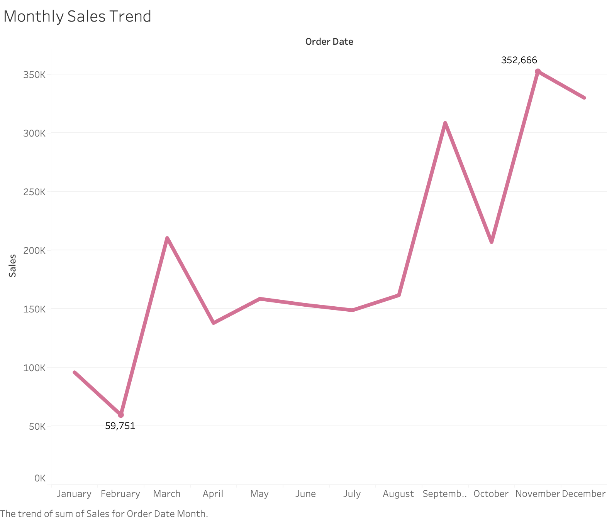
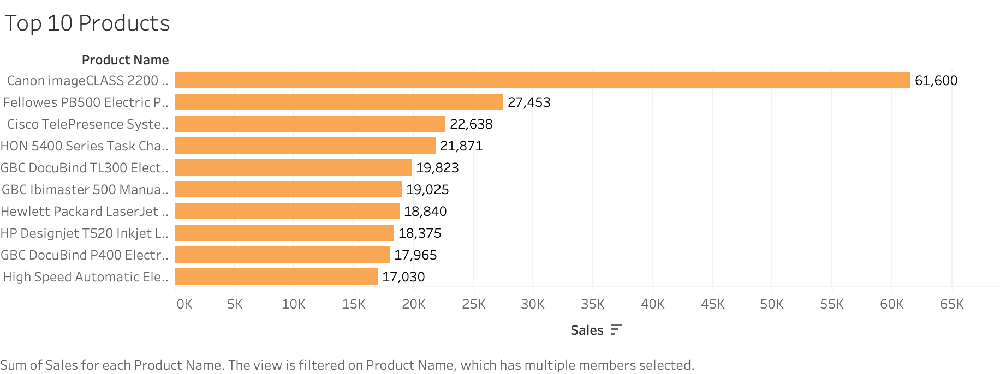
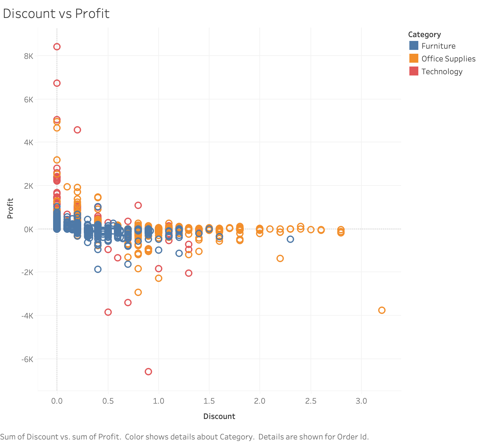

Revenue analyzed across regions, product categories, and monthly trends.
Overall profit margin was 12.6%, with discounting creating the clearest margin risk.
Cleaned transaction records used for Python, SQL, and Tableau analysis.
Owned the workflow from raw data preparation to final insights.
Retail orders, sales, profit, categories, regions, and discounts.
Cleaned data, queried KPIs, visualized trends, and summarized quantified findings.
Notebook, SQL script, cleaned data, dashboard workbook, and visuals.
Proof files
Everything a reviewer needs is easy to inspect.
Recruiter summary
A recruiter-ready analytics project with clear business context.
Goal: Identify which regions, categories, and products drive sales and profit, then present the findings in a clear dashboard-style portfolio project.
My role: Cleaned and prepared the data, created calculated fields, wrote SQL queries, built exploratory charts, and designed Tableau visuals for stakeholder-friendly reporting.
Business value: The analysis highlights sales concentration, regional performance, category strength, and the profitability risk connected to discounting using measurable evidence.
Best fit roles: Data Analyst, Business Analyst, BI Analyst, and entry-level analytics roles that require SQL, Python, dashboarding, and communication.
Business impact
What this analysis helps a business decide.
Focus attention on the West region, which generated $740K and 32% of total sales.
Review discounting behavior because discounted orders produced a $34K net loss overall.
Monitor annual growth because 2026 contributed $746K, the highest sales year in the dataset.
What this project shows
Data Cleaning
EDA
SQL Queries
KPI Reporting
Dashboard Design
Business Storytelling
Technical stack
Python, Pandas, Matplotlib, Jupyter Notebook, SQL, Tableau, Git, and GitHub.
- Python for cleaning and exploratory analysis
- SQL for business questions and KPI validation
- Tableau for stakeholder-facing dashboard visuals
Portfolio-ready outputs
Cleaned CSV, Jupyter notebook, SQL script, Tableau workbook, chart exports, and this case-study page.
- Readable project structure
- Reusable analysis files
- Visual evidence for every major insight
Process
A clear workflow a hiring manager can follow.
Prepared Data
Loaded the raw Superstore data, checked quality, cleaned fields, and created analysis-ready columns.
Explored Trends
Used Python to examine sales, profit, region, category, product, and monthly performance.
Answered Questions
Used SQL to calculate KPIs, compare segments, rank products, and validate business findings.
Built Visuals
Created Python and Tableau charts that communicate the most important patterns quickly.
Summarized Impact
Translated the analysis into concise insights around revenue, profitability, and discount behavior.
Business questions
The analysis is organized around practical stakeholder questions.
What are total sales, total profit, and order volume?
Which regions and product categories generate the most revenue?
Which products contribute most to sales performance?
How do monthly sales trends change over time?
How does discounting affect profitability?
Which insights should be highlighted for business decision-making?
Visual evidence
Charts that support the business story.
Python visuals show the exploratory analysis. Tableau visuals show how the findings can be packaged for stakeholders.
Python EDA
Exploratory charts created during analysis.

Monthly Sales Trend
Tracks sales movement over time to identify periods of stronger activity.

Sales by Category
Compares category-level revenue performance.

Sales by Region
Shows regional contribution to total sales.

Top Products
Highlights products with the largest revenue contribution.
Tableau Dashboard
Presentation-ready visuals for stakeholders.

Total Sales KPI
Summarizes total revenue at a glance.

Sales by Category
Compares revenue by product category.

Sales by Region
Breaks down sales distribution across regions.

Monthly Trend
Communicates sales performance over time.

Top 10 Products
Ranks the highest sales contributors.

Discount vs Profit
Explores how discounting affects profitability.
Key insights
Business findings from the analysis.
The West region generated $740K in sales, representing 32% of total revenue.
Technology generated $840K in sales and $147K in profit, the strongest category overall.
The top product, Canon imageCLASS 2200 Advanced Copier, generated $61.6K in sales.
No-discount orders produced $327K profit, while discounted orders lost $34K overall.
Recommendations
How I would turn the findings into action.
Double down on strong segments
Use West region and Technology category performance as benchmarks for sales planning.
Audit discount strategy
Investigate discount bands above 20%, where profit turns negative across the dataset.
Monitor top products
Track top products regularly because high-value items materially influence revenue performance.
Why recruiters should care
This project demonstrates practical analyst judgment, not just charts.
It shows the full path from raw data to business insight: cleaning, querying, visualization, interpretation, quantified recommendations, and presenting findings in a way a stakeholder can scan quickly.